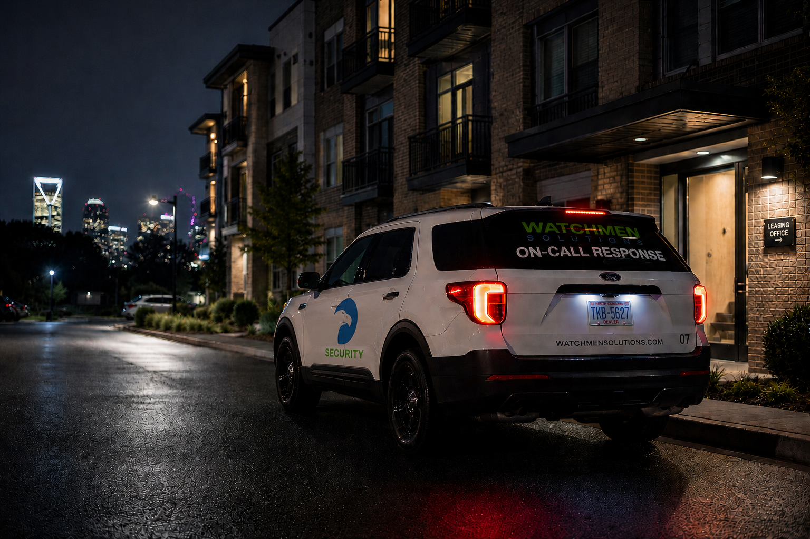

Mobile Vehicle Patrols
Marked units provide visible parking and perimeter coverage through scheduled and randomized routes. This is the anchor service for broad after-hours site presence.
View Mobile Vehicle Patrols →Scalable patrol coverage with visible field presence, GPS-Verified Daily Activity Reports, and dispatch-backed after-hours operational support for multifamily, hospitality, parking, commercial, and development properties.
Watchmen Solutions delivers three coordinated patrol services so property teams can align visibility, response, and documentation to site-specific risk windows.
Start from the Charlotte market hub →
Marked units provide visible parking and perimeter coverage through scheduled and randomized routes. This is the anchor service for broad after-hours site presence.
View Mobile Vehicle Patrols →
Officers cover breezeways, stairwells, amenities, and common areas where close-range visibility and direct interaction matter most.
View On-Foot Patrols →
Dispatch-coordinated response supports alarms and after-hours incidents with documented field handling and management communication.
View On-Call Response →Mobile visibility, interior foot coverage, and dispatch-backed response work as a practical operational structure: visible deterrence, consistent patrol records, and clear response handling when incidents occur.
Coverage for resident parking, common areas, and after-hours access transitions.
Guest-facing patrol support that prioritizes calm visibility and professional conduct.
Structured and surface parking coverage where visibility and incident awareness are critical.
After-hours rounds across mixed tenant environments, entries, and perimeter zones.
Patrol presence around gates, staging areas, and temporary site infrastructure.
GPS-Verified Daily Activity Reports, photo verification, incident documentation, and end-of-shift email delivery provide management with clear visibility into patrol activity and after-hours field operations.
Need service details by property type? Visit the Industry Coverage Hub for apartment, construction, hospitality, retail, and HOA operating models.
Tell us about your property type, after-hours concerns, and coverage windows, and we can recommend a practical patrol plan with scalable service coverage.